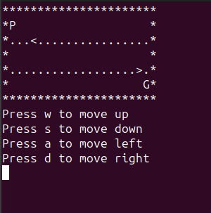
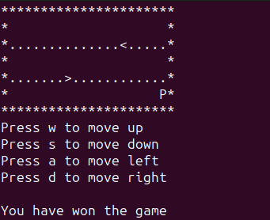
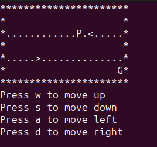
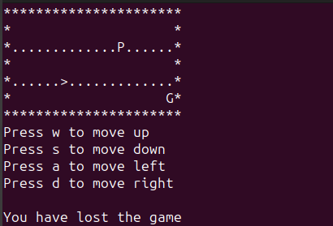

Crossy Road Game
This game, developed using C89, challenges players to navigate busy highways while avoiding cars that move back and forth. The objective is to safely cross each road and reach the destination without collision. Developing the game exclusively in C89 posed unique challenges due to its stricter rules and limitations compared to C99. Particular attention was given to dynamic memory allocation and deallocation to ensure efficient memory management and prevent leaks.
Win


Lose

